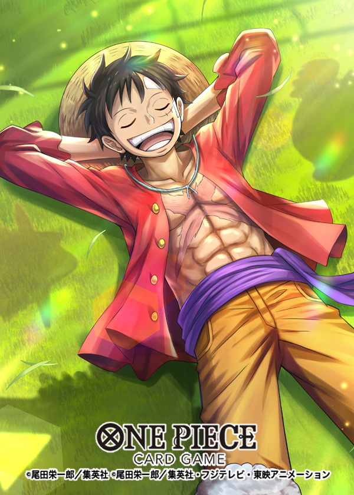
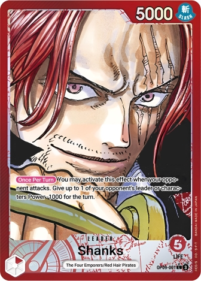
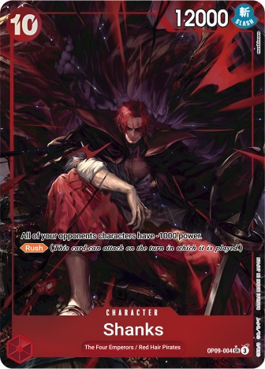
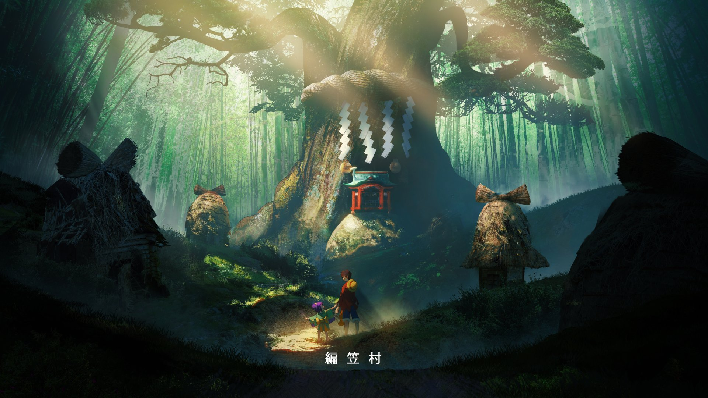

Es primera vez que intento hacer algo asi, por lo tanto me dejare llevar sin importar el resultado quiero hacerlo para aprender y ver mis avances en el mundo de la programacion. Buscando archivos en mis carpetas lo primero que encontre fueron algunas imagenes de las cartas de one piece, asique aprovechare de mostrarlas aqui abajo espero se vean bien. no estoy seguro si el copyryght de las imagenes me lo permite pero bueno, es solo para mostrar mis avances en la programacion, no para lucrar con ello.



